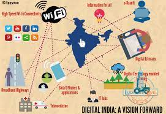

For some, Digital India is about Indian tech startups- Zomato, Ola, Urban Company, etc, that are redefining how we consume goods or services; for some it's the legendary tech services companies-TCS, Infosys and the like that have built India's mammoth $200 billion tech sector; for many, it is the power of social media and how its giving every Indian a voice; and for others, it is the increasing ease of use as more and more services, including government facilities, go online-UPI payments, Direct Benefit Transfers through Aadhaar, CoWin for vaccination, etc.
In the last 75 years, India has made a tremendous leap to become a robust digital economy, and the future of our country will be defined by how well we can integrate digital solutions across platforms. By the 100th year of our independence, plenty more can be achieved, for which we must strive towards developing a seamless, transparent, and inclusive digital ecosystem that is driven by India's world-class innovation capabilities. Let's see about this in detail.
Know more about:
Designed by:
Anuradha Mittal
IX C
Apeejay School,
Panchsheel Park, New Delhi
Thank you!!